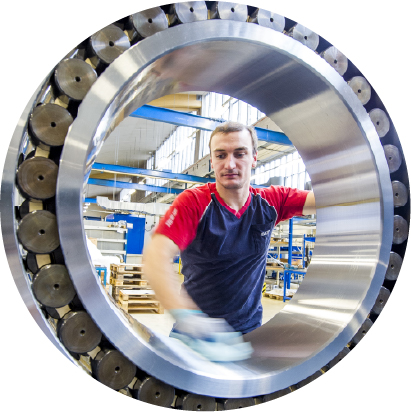
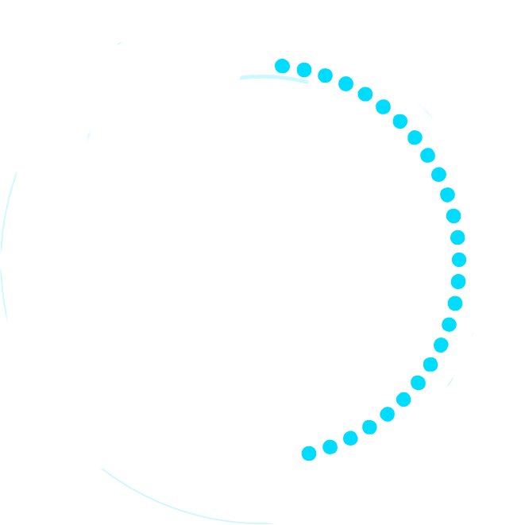
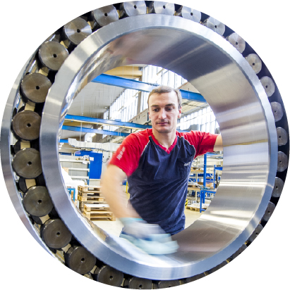
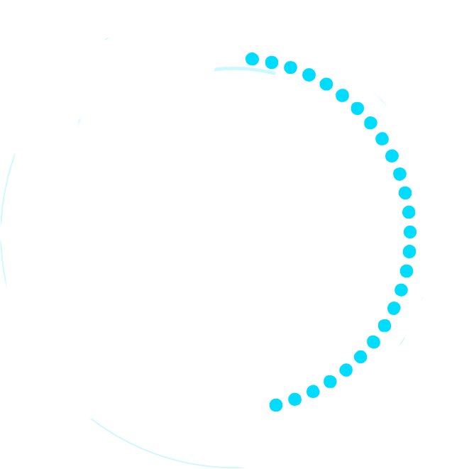

当关键部件轴承突发故障，
每一小时，您的企业将面临 高额停机损失：
 





SKF帮您发现改进的空间
找到哪里可以有所收获
找到哪里可以有所收获
为您的业务创造价值
SKF对您设备的可靠性和资产管理方案进行独立评估,并帮助您与全球最佳实践进行比较。通过评估和对比,
确定需要改进的领域。迈出第一步，识别可以为您的业
务创造价值的重要机遇。
日复一日，SKF用正确的工具
为您提供更恰当的维护
为您提供更恰当的维护
正确维护
设备维护工作变得日益复杂，给维护工作带来前所未有的压力。
维护不仅仅是为了让机器保持运转，更重要的是确保
其能为企业带来利润。因此，SKF的产品和服务可以帮
助企业提升成本价值。
SKF帮您解决设备问题
更防止问题再次发生。
更防止问题再次发生。
长期解决方案
SKF帮助您识别和消除根本原因，解决具体的应用问题，并防止它们再次发生。您可以更好地理解分析数据
，改进润滑和备件管理（MRO）,并采用基于性能的方法
来提高可靠性和利用率。
领先的监测和分析能力预见设备故障，
避免非计划停机。
避免非计划停机。
状态监测
机器停机的每一秒钟,都会给您带来损失。SKF有效的状态监测和数字技术可以在问题部件失效之前对其进
行维修。这不仅能帮助工厂降低出现灾难性故障的可
能性，也能实现预先订购零件、安排人力，并在停机期
间安排其它方面的维修。
SKF再制造工艺为您延长资产寿命，
提升可持续发展能力。
提升可持续发展能力。
修复服务
与直接报废和更换某些关键且昂贵的部件相比，修复能够给机器注入新的活力。借此，您可以降低维护成本
，减少设备故障，提高设备可靠性，降低总体拥有成本，
坐享环境效益。